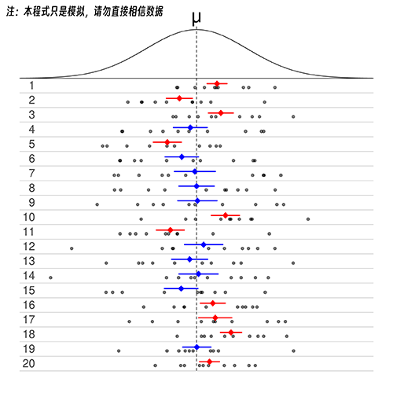

工具与数据/模拟与计算
辐射测量装置（盖革计数器）误差恒定的测量值抖动模拟
本页目录 4 节
辐射测量仪器（盖革计数器）存在误差。
由于计算了随机飞来的辐射，因此显示的数值也会波动。
这有多大的随机性？本页模拟了这个程序。
大多数型号不显示误差，但Polimaster系列、GammaRAE/NeutronRAE和其他型号会在屏幕上显示。
Polimaster PM1610说明书上说，误差显示在15%或以下后，应读取数值。
如果您想要更精确的数字，您可能希望读取 10% 或 5%。
但是，例如，如果您以 10% 读取，则实际数字似乎在显示值的 ±10% 以内。
在这个页面上，你可以设置辐射测量仪器的灵敏度和空气中的剂量，并迭代计算和模拟当仪器显示的误差达到一定值时，如15%、10%等，如何显示剂量。
由于每次进行模拟时结果都会发生变化，因此您可以通过多次进行模拟来了解数值如何因误差而波动。
相关工具：数据库
相关工具：辐射测量仪器（盖革计数器）的误差模拟。
相关工具：β射线射程计算工具
模拟辐射测量装置（盖革计数器）存在一定误差的测量值
* 在IE8或更早版本中，运行缓慢，会提示“Are you sure you want to stop executing the script?” 在这种情况下，请多次按“否”。如果您更新到 IE9 或 使用Google Chrome或 Firefox，模拟结果将立即出现。结果图
测量误差
其他
